Chapter 14 Simple Linear Regression
14.1 The perfect relationship
This figure shows two variables whose relationship can be modeled perfectly with a straight line. The equation for the line is \[ y = 10 + 20x \] The line cross the vertical y-axis at \(y=10\) and \(x = 0\). The slope is \(20\), that is, if \(x\) increases by one unit, then \(y\) increases by \(20\) units.
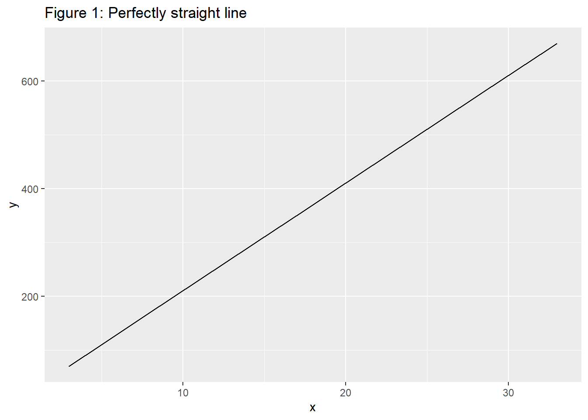
Imagine what a perfect linear relationship would mean:
You would know the exact value of \(y\) just by knowing the value of \(x\). This is unrealistic in almost any natural process.
For example, if we took family income \(x\), this value would provide some useful information about how much financial support \(y\) a college may offer a prospective student.
However, there would still be variability in financial support, even when comparing students whose families have similar financial backgrounds.
14.2 Linear regression
Linear regression assumes that the relationship between two variables, \(x\) and \(y\), can be modeled by a straight line:
\[ y = \beta_0 + \beta_1x \]
Here \(\beta_0\) is the intercept and \(\beta_1\) is the slope of the straight line.
It is rare for all of the data to fall on a straight line, as seen in the three scatterplots in the next figure.
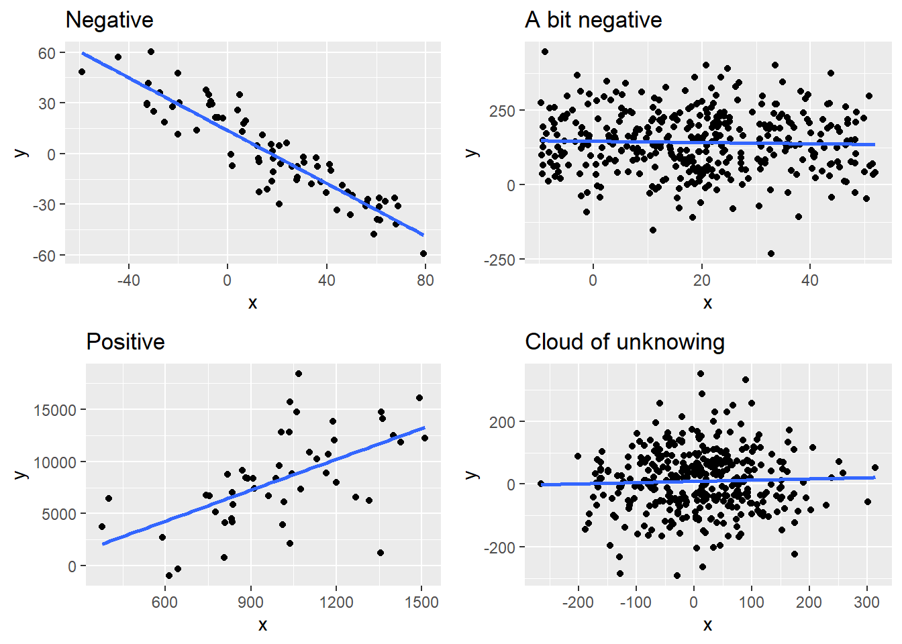
In each case, the data falls around a straight line, even if none of the observations fall exactly on the line.
- The first plot shows a relatively strong downward linear trend, where the remaining variability in the data around the line is minor relative to the strength of the relationship between \(x\) and \(y\).
- The second plot shows an upward trend that, while evident, is not as strong as the first.
- The last plot shows a very weak downward trend in the data, so slight we can hardly notice it.
In each of these examples, we will have some uncertainty regarding our estimates of the model parameters, \(\beta_0\) and \(\beta_1\). For instance, we might wonder, should we move the line up or down a little, or should we tilt it more or less?
14.3 Ordinary least squares
Here we begin to calculate the intercept and slope of that linear relationship we just looked at. The way to do this is to minimize the a measure of the errors (residuals) around this line. The traditional approach calculated deviations of the model from the dependent variable, then squares these deviations, and finally looks for the intercept and slope that minimizes the sum of the squared deviations. All of this is due to Carl Friedrich Gauss. It was later called “ordinary” least squares. There are definitely variants that are far from “ordinary” in the menagerie of statistical techniques.
14.4 Residual interests
Every \((x_i,y_i)\), for \(i = 1 \dots N\) points in the scatterplots above can be conceived a straight line plus or minus a “residual” \(\varepsilon\) \[ y_i = \beta_0 + \beta_1 x_i + \varepsilon_i \] Here we conceive of the \(\beta_0\) and \(\beta_1\) as population parameters and \(\varepsilon_i\) as a population variate, a sample of which produces estimates \(b_0\) and \(b_1\). The job at hand is to find the unique combination of \(b_0\) and \(b_1\) such that all of \(N\) sample observations of the \(\varepsilon_i\) taken together are as small a distance from \((x_i,y_i)\) to the straight line as possible.
Let’s look at simple data set before we go any further.Here is data from 10/1/2016 through 9/1/2017 on real consumption and disposable income from FRED.
First a scatterplot. We have 12 monthly observations of two variables, consumption and income.
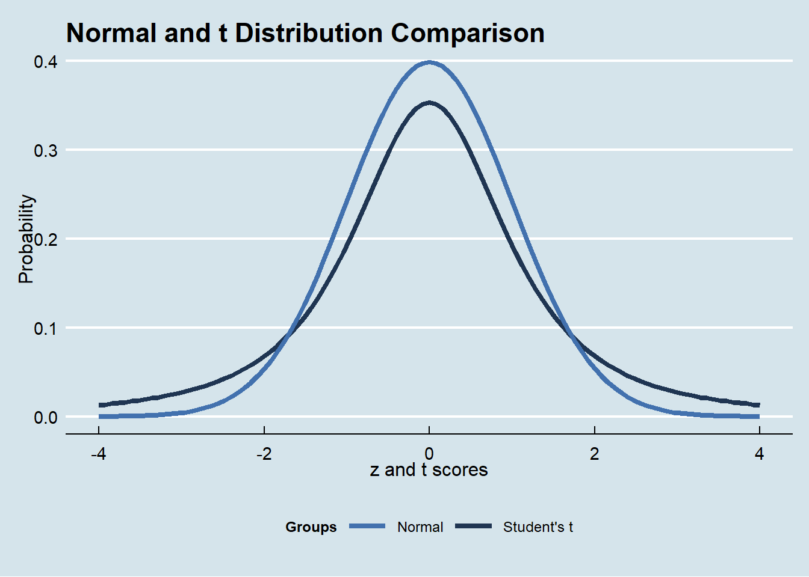
Second, suppose we think that the marginal propensity to consume out of disposable income is 0.9 and that even at zero disposable income, the residents of the U.S. would still consume 136.
Thus let’s run this straight line through the scatter of data.
\[ \hat{Y} = b_0 + b_1 X \] \[ \hat{Y} = 136 + 0.9 X \]
where \(\hat{Y}\) is our estimated model of consumption versus income \(X\). Don’t confuse \(X\) as income here with the \(X\) from our scatter plot story above!
\(Y\) is also called the dependent variable
\(X\) is the independent variable
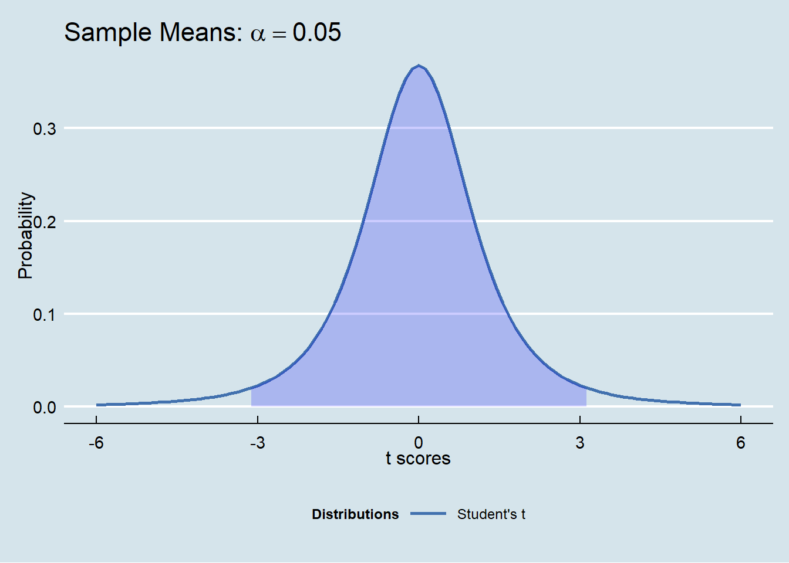
Some points are practically on the line, others are pretty far away.
The vertical distance from a consumption-income point to the line is the residual.
Our next step: draw error bars to visualize the residuals.
Each sample residual \(e_i\) is calculated from the model for consumption:
\[ Y_i = \hat{Y_i} + e_i \] \[ Y_i = b_0 + b_1 X_i + e_i \] \[ Y_i = 136 + 0.9 X_i + e_i \] That is, \[ e_i = Y_i - (136 + 0.9 X_i) \]
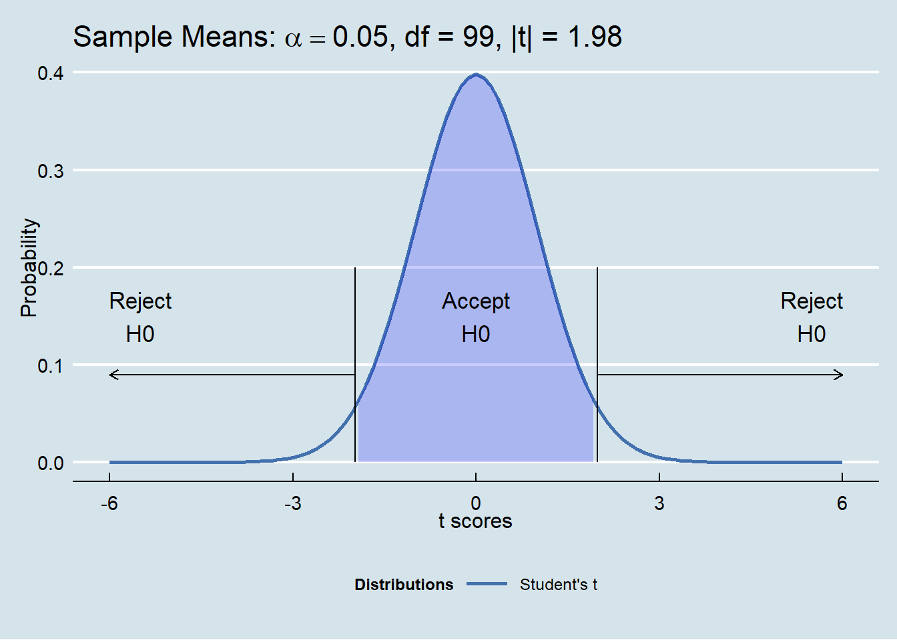
What we really want is to have a line go through this data such that it is the best line. We define “best” as the smallest possible sum of squared residuals for this data set and a straight line that runs through the scatterplot.
We are looking for estimates of \(\beta_0\) and \(\beta_1\), namely \(b_0\) and \(b_1\) that minimize the sum of squared residuals \(SSR\). Let’s remember that there are as many possible estimates \(b_0\) and \(b_1\) as there are potential samples from the population of all consumption-income combinations.
\(SSE\) is the sum of squared residual errors \[ SSE = e_1^2 + e_2^2 + \dots + e_N^2 \] \[ SSE = \sum_{i=1}^{N}\varepsilon_i^2 \] Substitute our calculation for \(\varepsilon_i\). Our job is to find the \(b_0\) and \(b_1\) that minimizes \[ SSE = \sum_{i=1}^{N}[Y_i - (b_0 + b_1 X_i)]^2 \] for all \(N\) observations we sampled from the consumption (\(Y\)) - income (\(X\)) population.
14.5 A dash of calculus
Now let’s find the best \(b_0\) and \(b_1\). To do this recall (with great affection!) the following two rules of differentiation (yes, the calculus). Suppose we have a function \(u = v^2\). Then \[ \frac{du}{dv} = 2v^{2-1} = 2v^1 = 2v \] Not so bad! But let’s mix it up a bit and suppose we have another function \(w = (1-v^2) = w(u(v))\)? We need to use the chain rule of differentiation of a function of a function to get at a derivative. The rule is this: if w(v) = w(u(v)), then \[ \frac{dw}{dv} = \frac{dw}{du}\frac{du}{dv} \]
We already know what \(du/dv = 2v\). What is \(dw/du\)? If we let \(u=v^2\), then \(w=1-u\) \[ \frac{dw}{du}=-1 \] That’s it. Putting the two derivatives together we have \[ \frac{dw}{dv} = \frac{dw}{du}\frac{du}{dv} = (-1)(2v) = -2v \]
Back to the \(SSE\) story, We have 12 terms like this \[ SSE_i = (Y_i - b_0 - b_1 X_i)^2 \] Overall we have two variables for which we want together to minimize \(SSR\). We take them one at a time, holding the other “constant.” We take the “partial” derivative to accomplish this task. First, for \(b_0\) and for each \(i\). \[ \frac{\partial SSE_i}{\partial b_0} = -2(Y_i - b_0 - b_1 X_i) \] Then we calculate the partial of \(SSE_i\) with respect to \(b_1\). \[ \frac{\partial SSE_i}{\partial b_1} = -2X_i(Y_i - b_0 - b_1 X_i) \]
we can summarize the overall effect of changing first \(b_0\) and then \(b_1\) by summing the partial derivatives for \(i=1 \dots N\), where \(N=12\) in our consumption-income example. Here are the first order conditions (FOC) around \(SSE(b_0,b_1)\):
\[ \frac{\partial SSE_i}{\partial b_0} = -2\sum_{i=1}^{N}[Y_i - (b_0 + b_1 X_i)] = 0 \] \[ \frac{\partial SSE_i}{\partial b_1} = 2\sum_{i=1}^{N}[Y_i - (b_0 + b_1 X_i)](-X_i) = 0 \] Here we have factored out the \(-2\) across the sum of residuals. We can solve these two simultaneous equations for \(b_0\) and \(b_1\) to get
\[ b_0 = \frac{\sum_{i=1}^N Y_i}{N} - b_1 \frac{\sum_{i=1}^N X_i}{N} \]
\[ b_1 = \frac{N\sum_{i=1}^N X_i Y_i - \sum_{i=1}^N X_i \sum_{i=1}^N Y_i}{N\sum_{i=1}^N X_i^2 - (\sum_{i=1}^N X_i)^2} \] Next we perform some arithmetic.
Here is a table of sums we need:
\[ \begin{center} \begin{tabular}{c|l|r} \hline term & Excel name & result\\ \hline $N$ & `n` & 12 \\ $\sum_{i=1}^N Y_i$ & `sumY` & 141.7 \\ $\sum_{i=1}^N X_i$ & `sumX` & 152.6 \\ $\sum_{i=1}^N X_i Y_i$ & `sumXY` & 1801.7\\ $\sum_{i=1}^N X_i^2$ & `sumX2` & 1939.8\\ \hline \end{tabular} \end{center} \]
We insert these amounts into the formulae for \(b_0\) and \(b_1\). We start with
\[ b_1 = \frac{n \times sumXY - (sumX) \times (sumY)}{n \times sumX2 - (sumX)^2} \] This translates into the following result:
\[ b_1 = \frac{12 \times 1801.7 - 152.6 \times 141.7 }{12 \times 1939.8- (152.6)^2} = 0.918 \] And then we get \[ b_0 = sumY/N - b_1 \times sumX/N \] \[ b_0 = 141.7/12 - 0.918 (152.6/12) = 0.136 \] We can summarize our results using our understanding of macroeconomics:
The marginal propensity to consume out of disposable income is 91.8%. The rest is “savings.”
Structural consumption, almost an idea of permanent consumption, is $136 billion over this sample period.
14.6 Now for the residuals
From our definition of residuals we can compute \[ e_i = Y_i - b_0 -b_1 X_i \] The sample mean of the residuals is \[ \bar e = \bar Y - b_0 - b_1 \bar X \] \[ = \bar Y - (\bar Y - b_1 \bar X) - b_1 \bar X \] \[ = (\bar Y - \bar Y) + b_1 \bar X - b_1 \bar X = 0 \] The mean of resisuals, by definition, is just zero!
The variance (standard deviation squared) of the residuals is \[ var(e_i) = s_e^2 = \frac{\sum_{i=1}^N (e_i - \bar e)^2}{n - k} = \frac{\sum_{i=1}^N e_i^2}{N - k} \] so that the standard error is: \[ s_e = \sqrt{var(e)} \] Here we have \(k=2\) sample estimators \(b_0\) and \(b_1\) and thus \(n-k = 12 - 2 = 10\) degrees of freedom. These are “freely” varying observations. This means that if we have 12 observations and have estimated 2 parameters, in effect, we have only 10 freely varying observations and can infer the other 2 by using the two estimated parameters.
From our data
\[ var(e) = \frac{\sum_{i=1}^N e_i^2}{n - k} = \frac{0.0171}{10} = 0.00171 \] \[ s_e = \sqrt{var(e)} = \sqrt{0.00171} = 0.0414 \] Let’s construct a 95% prediction confidence interval around the ability of this model to predict consumption when we forecast a new level of disposable income. We know that the critical \(t\) scores for a two-tailed (2.5% in each tail) 95% confidence region are \(+/- 2.2281\).
The variance of a forecasted level of consumption given an estimate of the forecasted level of disposable income \(Y_F\) is, through quite a bit of algebraic rearrangement,
\[ s_F^2 = s_e^2\left[1 + \frac{1}{N} + \frac{(X_F - \bar X)^2}{\sum_{i=1}^N (X_i - \bar X)^2}\right] \] \[ = (0.00171)\left[1 + \frac{1}{12} + \frac{(13 - 12.7139)^2}{0.0962}\right] =0.003342 \] \[ s_F = \sqrt{0.03342} = 0.0578 \] The forecasted consumption is \[ \hat Y = Y_F = 0.136 + 0.0918 \times 13 = 12.07 \]
14.7 Have some confidence
If we need confidence that must mean we are unsure about something. That something is the reliability of our forecast and the underlying estimates of \(b_0\) and \(b_1\).
14.8 Central to our discussion
Take any distribution, say the Poisson with \(\lambda = 3\). Run many, many samples of this distribution of size \(x = 10\). Calculate the sums, means (that is, the sums divided by the sample size \(x\)), and the variances (square of the standard deviation) of each sampling. Suppose now we take 10,000 samples.
Here are the results visualized as distributions.
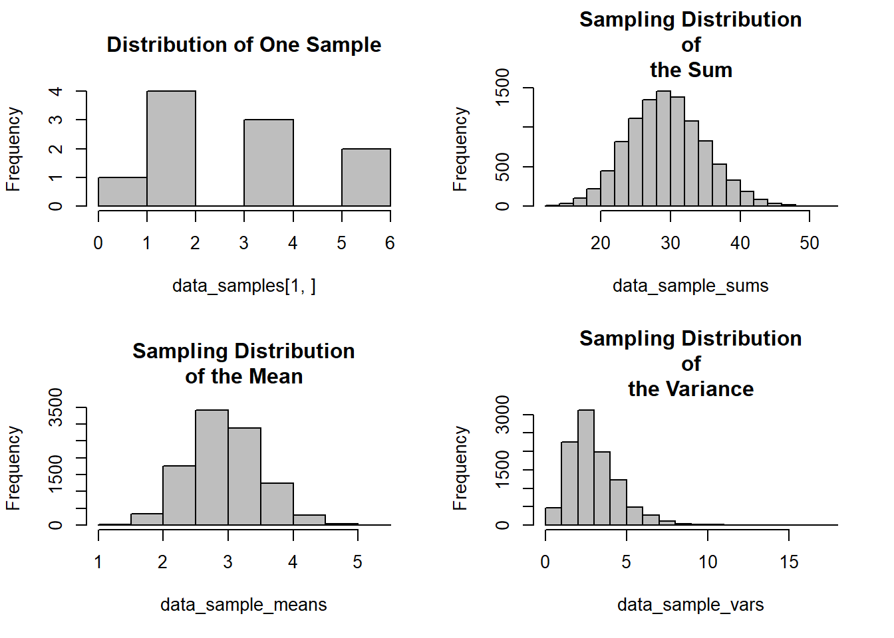
The main take away is that with sampled means we get approximately normal distributions. A t-distribution is indicated when the sampled standard deviations are also random, as they appear to be here.
14.9 On to the unknown
Let’s suppose we do not know the population standard deviation. Now the sample standard deviation is also a random variable, like the sample mean. In practice this is nearly always the case. What do we do now?
Use the Student’s t distribution to correct for confidences that are, well, not so confident.
Here’s a plot of the Student’s t overlaid with the normal distribution.
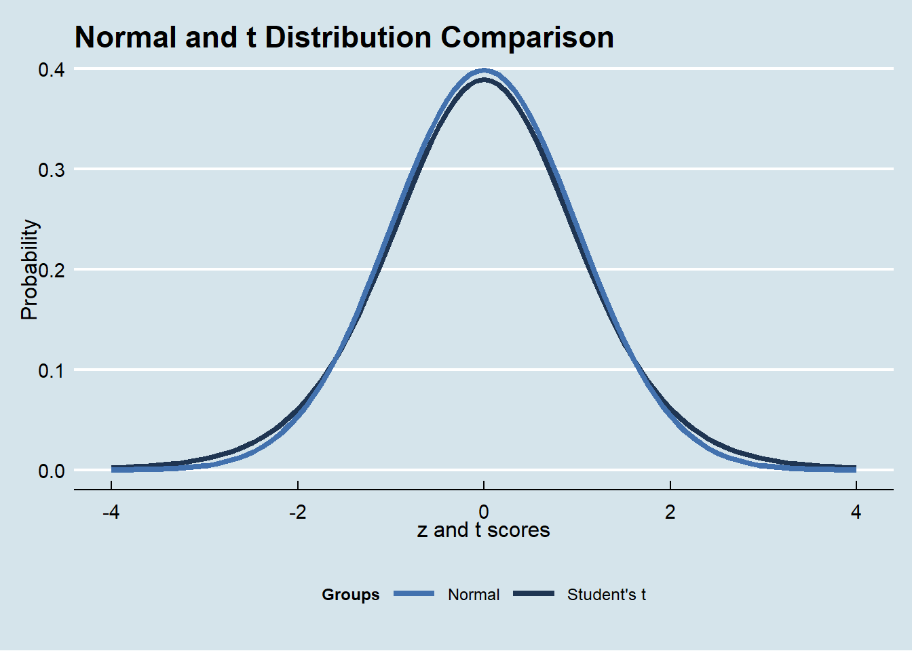
What do we notice?
Normal is more pinched in than the \(t\) (kurtosis? right!)
\(t\) has thicker tails than normal
Let’s check that: in Excel use =T.INV(2.5%, 10) which returns -2.23, and where the degrees of freedom \(df\) of our 12 sample observations is \(df = n - k = 12 - 2 = 2\). Thus for the t distribution it takes 2.23 standard deviations below the mean to hit the 2.5% level of cumulative probability. It only took 1.96 standard deviations on the normal distribution. There are 10 degrees of freedom because it only takes 10 out of the 12 sampled consumption-disposable income pairs to get the eleventh and twelth observations (we do this by using 2 estimators, the mean y-intercept \(b_0\) and the mean slope \(b_1\) we calculated).
- That it took fewer standard deviations for the normal than for the t distribution to hit the 2.5% level of cumulative probability means that the t distribution is thicker tailed than the normal.
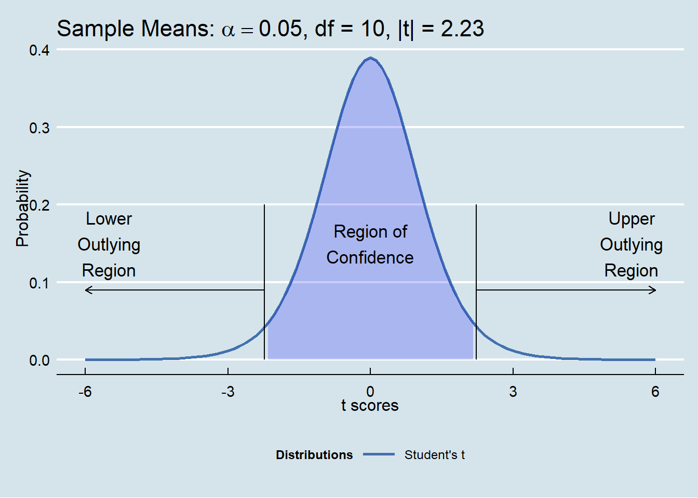
14.10 By the way, who is Student?
You may have seen the slogan “Guiness is Good for You.” William Gosset (1876-1937) was a modest, well-liked Englishman who was a brewer and agricultural statistician for the famous Guinness brewing company in Dublin.
Guiness insisted that its employees keep their work secret, so Gosset published the distribution under the pseudonym “Student” in 1908. This was one of the first results in modern small-sample statistics.
14.11 In all confidence: forecasting for fun and …
A confidence interval has the estimate in the middle with upper and lower bounds on the estimate determined by the number of standard deviations away from the estimate that are tolerable. If there is a tolarance of 5% error, then there are 2.5% tolerances above the upper and 2.5% tolerances below the lower bounds. Another way of putting this is to say that between the upper and lower bounds of the interval we are 95% confident in the range of the population forecast. All of this depends on the assumption that the residuals are normally distributed with zero mean and a constant standard deviation (variance).
The 95/% confidence interval of the population forecast \(Y_F\) is this probability statement.
\[
Prob[\hat Y - t_{0.025}s_F \leq Y_F \leq \hat Y + t_{0.975}s_F ] = 0.95
\]
The lower bound of the population forecast of consumption \(Y_F\) is \(t_{0.025}\) standard deviations \(s_F\) below the estimated forecast \(\hat Y\), and similarly for the upper bound. In Excel we can find the number of standard deviations from zero that corresponds to a probability of 2.5% using T.INV(0.025, 10), where \(10\) is the degrees of freedom \(N - k = 12 - 2 = 10\). This number is \(-2.23\). Because the \(t-\)distribution is symmetric about zero, we can use the absolute value of the same number in the upper end of the interval.
\[ Prob[12.07 - (2.23)(0.0578) \leq Y_F \leq 12.07 + (2.23)(0.0578) ] = 0.95 \] \[ Pr[11.9 \leq Y_F \leq 12.2] = 0.95 \] There is a 95% probability that forecasted consumption conditional on a forecast of disposable income equal to $\(13\) trillion will lie between \(\$11.9\) and \(\$12.2\) trillion.
14.12 How confident are we in our estimates?
Let’s put \(b_0\) and \(b_1\) into a form that will be really useful when we try to infer the confidence interval for these parameters. This form will also allow us to interpret the \(b_1\) estimate in terms of the correlation estimate \(r_{cy}\) and the consumption elasticity of income \(\eta_{cy}\).
Let’s start with \[ b_1 = \frac{N\sum_{i=1}^N X_i Y_i - \sum_{i=1}^N X_i \sum_{i=1}^N Y_i}{N\sum_{i=1}^N X_i^2 - (\sum_{i=1}^N X_i)^2} \] Multiply both sides by \(1 = N^2 / N^2\). This manuever will allow us to restate \(b_1\) in an algebraicly equivalent way (shout out to Huygens, the astronomer b. 1629). \[ b_1 = \frac{\frac{\sum_{i=1}^N X_i Y_i}{N} - \left(\frac{\sum_{i=1}^N X_i}{N}\right) \left(\frac{\sum_{i=1}^N Y_i}{N}\right)}{\frac{\sum_{i=1}^N X_i^2}{N} - \left(\frac{\sum_{i=1}^N X_i}{N}\right)^2} \]
We rearrange the numerator and denominator into this slightly neat(er) result.
\[ b_1 = \frac{\frac{\sum_{i=1}^N X_i Y_i}{N} - \bar{X}\bar{Y}}{\frac{\sum_{i=1}^N X_i^2}{N} - \bar{X}^2} \] In turn we can express this as
\[ b_1 = \frac{\sum_{i=1}^N (X_i - \bar{X})(Y_i - \bar Y)}{\sum_{i=1}^N (X_i - \bar X)^2} = \frac{cov(X,Y)}{ var(X)} \] where \(cov(X,Y)\) is the covariance of \(X\) and \(Y\) and \(var(X)\) is the variance (standard deviation squared) of \(X\).
Using this form we can derive the variance of the random variable \(b_1\).
Here goes for consumption \(Y\) and disposable income \(X\):
\[ s_{b_1}^2 = \frac{s_e^2}{\sum_{i=1}^N (X_i - \bar X)^2} = \frac{0.00171}{0.0962} = 0.01777 \]
\[ s_{b_1} = \sqrt{0.01777} = 0.134 \] with rounding.
The 95% confidence interval for estimating the population parameter \(\beta_1\) is this probability statement. \[ Prob[b_1 - t_{0.025}s_{b_1} \leq \beta_1 \leq b_1 + t_{0.025}s_{b_1} ] = 0.95 \] \[ Pr[0.918 - (2.23)(0.134) \leq \beta_1 \leq 0.918 + (2.23)(0.134) ] = 0.95 \] \[ Pr[0.619 \leq \beta_1 \leq 1.217] = 0.95 \] There is a 95% probability that the population marginal propensity to consume out of disposable income will lie between \(0.619\) and \(1.219\). Decision makers might do well to plan for considerable movement in this number when formulating policy.
Again the estimation cuts a wide swathe. This width may be the cause of the wide forecast interval for predicted consumption we noticed above.
Let’s compute the variance of the random variable \(b_0\). Here it goes:
\[ s_{b_0}^2 = s_e^2\left[\frac{1}{N} + \frac{\bar X^2}{\sum_{i=1}^N (X_i - \bar X)^2}\right] = 0.00171\left(0.0833 + \frac{12.71^2}{0.0962}\right) = 2.9036 \] \[ s_{b_0} = \sqrt{2.9036} = 1.701 \] with rounding. Remember that \(X\) is the independent variable disposable income.
The 95% confidence interval for estimating the population parameter \(\beta_0\) is this probability statement. \[ Prob[b_0 - t_{0.025}s_{b_0} \leq \beta_0 \leq b_0 + t_{0.025}s_{b_0} ] = 0.95 \] \[ Prob[0.136 - (2.23)(1.701) \leq \beta_0 \leq 0.136 + (2.23)(1.701) ] = 0.95 \] \[ Prob[-3.661 \leq \beta_0 \leq 3.993] = 0.95 \] There is a 95% probability that the population structural level of consumption (intercept term) will lie between \(-3.661\) and \(3.993\).
We have further probable evidence that our estimation has a fairly high degree of uncertainty as parameterized by this probability statement for the \(\beta_0\) confidence interval.
14.13 Next let’s hypothesize
Herein we test the hypothesis that \(b_0\) and \(b_1\) are no different than zero. This is called the null hypothesis or \(H_0\). The alternative hypothesis or \(H_1\) is that the estimators are meaningful, namely, they do not equal zero.
Two errors are possible
| True | False | |
|---|---|---|
| Accept | Correct | II: False Negative |
| Reject | I: False Positive | Correct |
Type I Error: A type I error occurs when the null hypothesis (\(H_0\)) is true, but is rejected. It is asserting something that is absent, a false hit. A type I error is often called a false positive (a result that indicates that a given condition is present when it actually is not present).
Type II Error: A type II error occurs when the null hypothesis ($H_0) is false, but is accepted. It is asserting something that is there, but really is not. A type II error is often called a false negative (a result that indicates that a given condition is absent when it actually is present).
How can we control for error?
Here is what we can do:
- Management makes an assumption and forms a hypothesis about the population \(\beta_0\) and \(\beta_1\) estimates. This is a precise statement about two specific metrics. Let’s work with \(\beta_0\). All the same can, and will be said of \(\beta_1\).
The null hypothesis (\(H_0\)) is that the population metric equals a target value \(\beta_0^*\) or \(H_0: \beta_0 = \beta_0^*\). Suppose that \(H_0: \beta_0 = 0\).
The alternative hypothesis (\(H_1\)) is that the population metric does not equal (or is just greater or less than) the target value. Thus we would have \(H_1: \beta_0 \neq 0\).
- A decision maker sets a degree of confidence in accepting as true the assumption or hypothesis about the metric. The decision maker determines that 95% of the time \(\beta_0 = 0\). This means there is an \(\alpha =\) 5% significance that the company would be willing to be wrong about rejecting the assertion that \(H_0: \beta_0 = 0\) is true.
Under the null hypothesis it is probable that above or below a mean value of zero there is a Type I error of \(\alpha = 0.05\) over the entire distribution of \(b_0\) or of \(b_1\). This translates into \(\alpha / 2 = 0.025\) above and \(\alpha / 2 = 0.025\) below the mean.
Because management expresses the null hypothesis as “not equal,” then this translates into a two-tailed test of the null hypothesis.
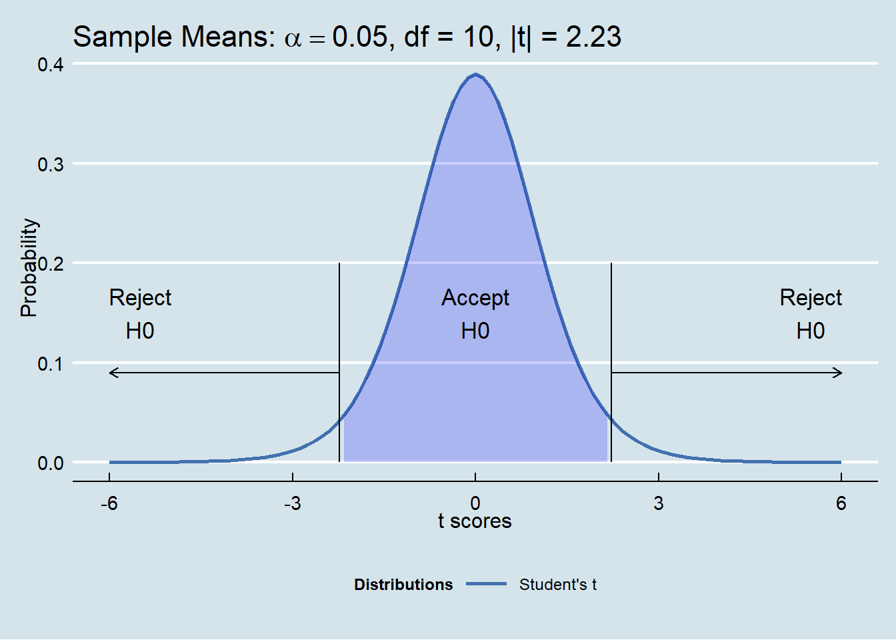
We have a sample of \(N = 12\) observations of consumption and disposable income. We then computed the sample estimate \(b_0 = 0.136\) for the average intercept with sample standard deviation \(s_{b_0} = 1.701\), and in trillions of USDs.
Now compute the \(t\) score
\[ t = \frac{b_0 - 0}{s_{b_0}} = \frac{0.136 - 0}{1.701} = 0.0799 \]
and compare this value with the the acceptance region of the null hypotheses \(H_0\).
- For a sample size of \(n = 12\) and \(k = 2\) estimators (\(\bar X\)), then the degrees of freedom \(df = n - k = 12 - 2 = 10\). Under a Student’s t distribution with 10 \(df\), and using Excel’s
=T.INV(0.025, 10), the region is bounded by t scores between \(-2.23\) and \(+2.23\).
The computed t score is 0.0799 and falls in the acceptance region of the null hypothesis \(H_0: \beta_0 = 0\).
We can now report that we are 95% confident that a decision maker may accept the null hypothesis that the consumption-income intercept is no different than zero.
Another way of reporting this is that there is a 5% probability that we analysts could be wrong in concluding that the intercept is zero.
14.14 Yet another school of thought
we could ask this question:
If we know the t-score, what is the probability that any other t-scores are greater than this computed t-score?
Find the p-value \(= Pr(|t|)\)
If this p-value is “small” enough, then our parameter estimate is “far enough” away from zero to reject the null hypothesis.
- Compare with criterion \(t^*\) value that is the probability of being wrong about rejecting the null hypothesis and \(1-Pr(t^*)\) being right about accepting the alternative hypothesis.
Calculating \(\dots\)
Use \(1-\)T.DIST(abs(score), df, TRUE)
This gets us the probability from the score all the way to the end of the distribution (infinity and beyond!)
This is the probability that you would be wrong if you accepted the null hypothesis
\(1-\)p-value is the probability that you would be correcct if you rejected the null hypothesis (accepted the alternative hypothesis)
For \(b_0\), \(t = 0.080\)
Set acceptance criterion: at \(t^* 1\%\) probability of being wrong about rejecting the null hypothesis
Calculate \(1-Pr(|t|)\) = \(1-\)
T.DIST(abs(0.0799), 10, TRUE)\(=1-0.47 = 0.53\)Test: p-value \(> 1\%\), therefore accept the null hypothesis that \(b_0 = 0\)
For \(b_1\), \(|t| = 6.8503\)
Set acceptance criterion: at \(t^* = 1\%\) probability of being wrong about rejecting the null hypothesis
Calculate \(1-Pr(|t|)\) = \(1-\)
T.DIST(abs(6.8503), 10, TRUE)\(=1- 0.999978 = 0.00002\)Test: p-value \(< 1\%\), therefore accept the alternative hypothesis that \(b_1 \neq 0\)
14.15 Summary of simple linear regression estimation
For the model \[ Y_i = b_0 + b_1 X_i + e_i \]
| parameter | estimator | standard.deviation | t.value |
|---|---|---|---|
| \(b_0\) | \(\bar Y - b_1 \bar X\) | \(\sqrt{s_e^2\left[\frac{1}{N} + \frac{\bar X^2}{\sum_{i=1}^N (X_i - \bar X)^2}\right]}\) | \(\frac{b_0}{s_{b0}}\) |
| \(b_1\) | \(\frac{N\sum_{i=1}^N X_i Y_i - \left(\sum_{i=1}^N X_i\right) \left(\sum_{i=1}^N Y_i\right)}{N\sum_{i=1}^N X_i^2 - (\sum_{i=1}^N X_i)^2}\) | \(\sqrt{\frac{s_e^2}{\sum_{i=1}^N (X_i - \bar X)^2}}\) | \(\frac{b_1}{s_{b1}}\) |
14.16 How good a fit?
Even though we just examined parameter-specific hypotheses:
Is \(b_0\) far enough away from \(0\) to claim that \(b_0 \neq 0\)?
Is \(b_1\) far enough away from \(0\) to claim that \(b_1 \neq 0\)?
We still need to ask (and answer probably)
Is the model any better than just noise?
Are \(b_0\) and \(b_1\) jointly not far enough away from \(0\)?
\[ H_0: b_0 = b_1 = 0 \] \[ H_1: b_0, b_1 \neq 0 \]
14.17 Let’s build more statistics!
To answer these pressing questions we need to look at the variations in the model.
- Calculate the total variation in \(Y\) (consumption \(c\)) as the “sum of squares total” or \(SST\) around its own mean \(\bar Y\) \[ SST = \sum_{i=1}^N (Y_i - \bar Y)^2 \]
- Calculate the variation in the model itself from the average \(Y\) as the “sum of squares of the regression” of \(SSR\) \[ SSR = \sum_{i=1}^N ((b_0 + b_1 X_i) - \bar Y)^2 \]
- Calculate the variation in the error term (we already did this one!) as the “sum of squares of the error” or \(SSE\) \[ SSE = \sum_{i=1}^N e_i^2 \]
From the model’s point of view we have
\[ Y_i = b_0 + b_1 X_i + e_i \] Subtract \(\bar Y\) (average disposable income) from both sides to get
\[ Y_i - \bar Y = b_0 + b_1 X_i + e_i - \bar Y = (b_0 + b_1 X_i)- \bar Y + e_i \] We then square each side. But wait!
Then we use a property of the model that there are no cross terms between the error \(e_i\) terms and the model. This means that the model measures variations that are in no way at all related to the error terms. They are thus independent of one another. We get this \[ (Y_i - \bar Y)^2 = (b_0 + b_1 X_i - \bar Y)^2 + e_i^2 + 2(b_0 + b_1 X_i - \bar Y)e_i \] \[ (Y_i - \bar Y)^2 = (b_0 + b_1 X_i - \bar Y)^2 + e_i^2 \] Then sum it all up to get \[ \underbrace{\sum_{i=1}^N (Y_i - \bar Y)^2}_{SST} = \underbrace{\sum_{i=1}^N (b_0 + b_1 X_i - \bar Y)^2}_{SSR} + \underbrace{\sum_{i=1}^N e_i^2}_{SSE} \] That is
\[ \underbrace{SST}_{total} = \underbrace{SSR}_{explained} + \underbrace{SSE}_{unexplained} \] Forever and for all time.
For our consumption-income data we have \(SST = 0.098\), \(SSR = 0.082\), \(SSE = 0.017\), so that \[ SST = SSR + SSE \]
\[ 0.098 = 0.082 + 0.017 \]
Now divide both sides by \(SST\) to get the proportion of total variation due to the two components: the model and the error \[ \frac{SST}{SST} = 1 = \frac{SSR}{SST} + \frac{SSE}{SST} \] Now define the \(R^2\) statistic as the fraction of total variation that the regression “explains” or \[ R^2 = \frac{SSR}{SST} = 1 - \frac{SSE}{SST} \] \[ R^2 = \frac{0.082}{0.098} = 1 - \frac{0.017}{0.098} = 0.84 \] In words: our model with disposable income explains 84% of the total variation in the consumption data.
How good is this? We had to ask \(\dots\)!
14.18 Analyze this …
We have just decomposed the total variation into two components:
the model and the error term (explained and the unexplained)
ratios of model variation and error variation to the total variation (\(R^2\))
The null hypothesis is the average variation in the model is no different from zero. This means that under the null hypothesis, the model does not explain anything at all: \[ H_0: b_0 = b_1 = 0 \]
It’s all just noise. Our job now is to compare the regression variation with the error variation. If the regression variation is very small relative to the error variation then we (probably) have reason to accept the null hypothesis that the model explains nothing much at all.
We calculate (SS = Sum of Squares, df = degrees of freedom, MS = Mean Square, F = (F)isher’s statistic)
Let’s dig into the \(F\) statistic.
Just like the \(t\) statistic it is a “score”
Measures the relative variation of two sums of squares
Student’s-t composed of the ratio of a normal distribution to a chi-squared distribution
Different from the Student’s-t: composed of the ratio of two chi-squared distributions, each with a different degree of freedom
\[ F(k-1, N-k) \approx \frac{SSR / (k-1)}{SSE / (N-k)} \]
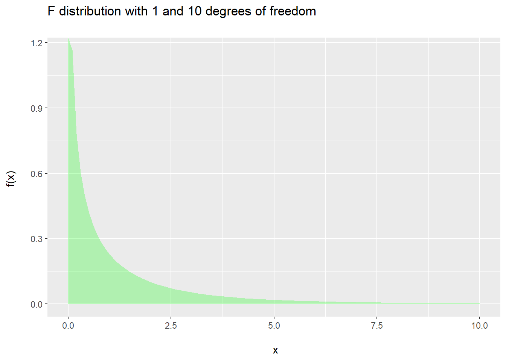
Set the probability that we are wrong about accepting the null hypotheses \(= 1\%\)
Calculate \(F = "explained" variation / "unexplained" variation = MSR / MSE = 46.3\)
Calculate the p-value using \(1-\)
F.DIST(46.9, 1, 10, TRUE)\(= 1 - 0.999955 = 0.000045\)Reject the null hypothesis with a probability that you might be wrong \(0.0045\%\) of the time and accept the alternative hypothesis that this model with disposable income sufficiently explains the variation in total consumption \(99.99\%\) of the time.
14.19 Two samples – same population?
We often take samples of the same variable at different times or as subsets of a larger pool of observations.
Suppose we wonder if the marginal propensity to consume out of disposable income was different before the Volker era of the Federal Reserve, say, early 1980, versus long after, in late 2017. To do this we take two samples of consumption-income at two different times: 1980’s and the very recent past. We find that
\[ \begin{center} \begin{tabular}{c|c|c|c|c} sample & parameter & estimate & standard deviation & sample size \\ \hline 1980 & $b_1$ & 0.86 & 0.201 & 14 \\ \hline 2017 & $b_1$ & 0.92 & 0.134 & 12 \\ \hline \end{tabular} \end{center} \]
Here is a procedure we can follow:
Set the significance level to 1% (or some other level).
Form the null and alternative hypotheses: \[ H_0: \beta_{1,2017} = \beta_{1,1980} \] \[ H_1: \beta_{1,2017} \neq \beta_{1,1980} \] where the \(\beta_1\)s are the population parameters for the marginal propensity to consume out of disposable income. This formulation is equivalent to \[ H_0: \beta_{1,2017} - \beta_{1,1980} = 0 \] \[ H_1: \beta_{1,2017} - \beta_{1,1980} \neq 0 \]
Calculate the pooled standard deviation of the two samples as \[ s_{pool} = \sqrt{s_{1,2017}^2 + s_{1,1980}^2} \] \[ s_{pool} = \sqrt{0.134^2 + 0.501^2} = 0.242 \]
Calculate the t-ratio
\[ t = \frac{b_{1,2017}-b_{1,1980}}{s_{pool}} = \frac{0.92 - 0.86}{0.242} = 0.248 \]
Correcting for the two regression error standard deviations embedded in each of the two standard deviations of the \(b_1\)s, the degrees of freedom are
\[ df_{pool} = (N_{2017} - 2) + (N_{1980} - 2) = (12-2)+(14-2) = 22 \]
Calculate \(Pr(>|t|)\) using
=1 - T.DIST(0.248, 22, TRUE)\(=1-0.594 = 0.406\), the cumulative probability in the tail of the distribution.Accept the null hypothesis and reject the alternative hypothesis since \[ Pr(>|t|)= 0.406 > 0.01 \] far in excess of the significance level. We would be wrong (probably) over 40% of the time if we were to reject the null hypothesis that the two marginal propensities to consume out of disposable income were equal.
14.20 Anything abnormal?
We have assumed thruoghout our statistical inference that underlying variables and their statistical estiamtes are normally distributed. Is this so?
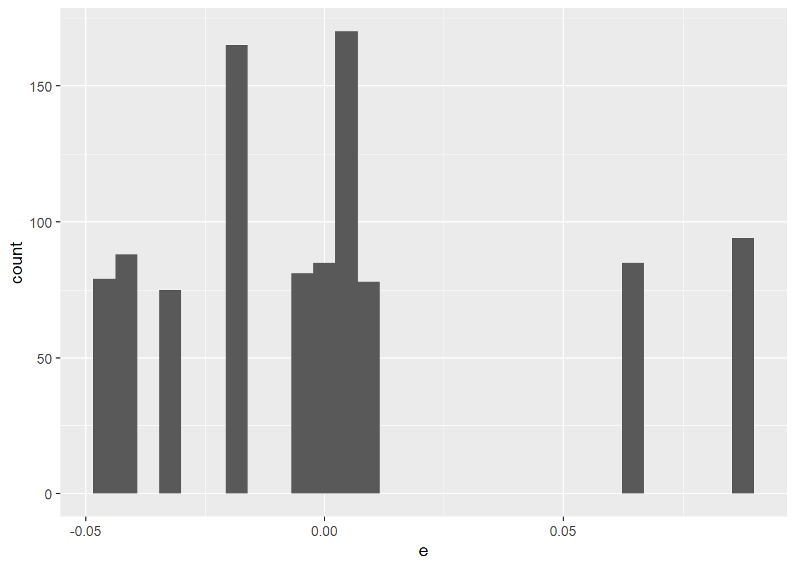 This doen’t look very symmetric with thin tails.
| mean | median | skewness | kurtosis | |
|---|---|---|---|---|
| error statistics | 0.001 | -0.003 | 0.998 | 3.19 |
The mean and median are fairly close together. There is some positive (right side) skewness. Kurtosis is not very far from mesokurtic value of 3.0 for the normal distribution. All in all, the errors do not look so non-normal after all.
We can bootstrap a confidence interval for the kurtosis of the error term by creating a sample of 1000 of the error terms. For each replication we then calculate the kurtosis. The result is 1000 random samples of kurtosis. Here is the distribution of the kurtosis from this experiment.
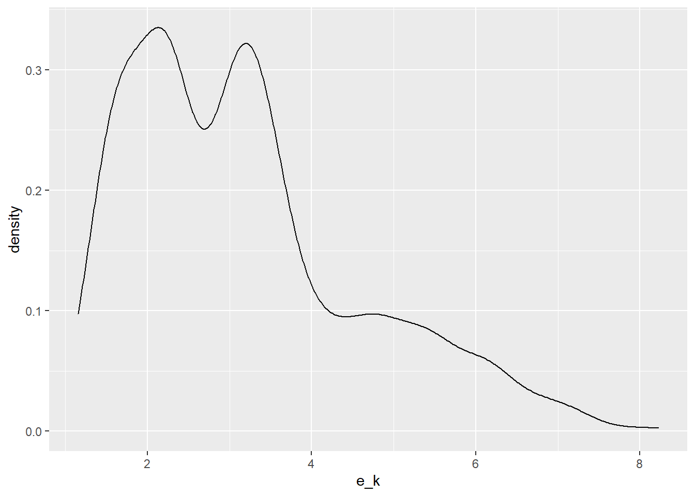
We can then build this 95% confidence interval around the kurtosis:
| 0.025 | 0.25 | 0.5 | 0.75 | 0.975 | |
|---|---|---|---|---|---|
| error quantiles | 1.41 | 2.12 | 2.98 | 3.8 | 6.53 |
The median tells us that the kurtosis is very close the 3.0 value of a normal distirbution with little kurtosis in excess of 3.0. However, there is again a skewness in that the distance between the 2.5% and 50%tile versus the distance between the 50% and 97.5%tile are quite different. There is a higher probability of values above the median than below, thus the skewness.
14.21 Exercises
Repeat the forecast confidence intervals for disposable income equal to 15, 20, 25. What do you observe about the width of the interval as the forecast increases?
Test the hypothesis that the population marginal propensity to consume out of disposable income is no different than zero with a probability of type II error equal to 95%.
Using the following data sets to compute all regression estimates, standard deviations, a forecast confidence interval for a forecasted independent variable observation, confidence intervals and hypothesis testing for each of the estimators, and \(R^2\) and \(F\) hypothesis testing for the overall model. For each data set and model extract the error terms and review the percentiles, mean, standard deviation, skewness, and kurtosis. Do they look like they were drawn from a normal distribution? Show all work. Interpret your findings.
- Peruvian anchovies
- Bronx corn
- US House of Representatives data from the package
openintro
14.21.1 US House of Representatives seats and unemployment
data <- read.csv("data/unemployment-seats.csv")
#str(data)
lm_fit <- lm(unemployment ~ house.seats, data)
summary(lm_fit)##
## Call:
## lm(formula = unemployment ~ house.seats, data = data)
##
## Residuals:
## Min 1Q Median 3Q Max
## -3.579 -2.264 -1.180 0.065 14.325
##
## Coefficients:
## Estimate Std. Error t value Pr(>|t|)
## (Intercept) 6.95447 1.28079 5.43 0.0000096 ***
## house.seats 0.00697 0.08259 0.08 0.93
## ---
## Signif. codes: 0 '***' 0.001 '**' 0.01 '*' 0.05 '.' 0.1 ' ' 1
##
## Residual standard error: 4.13 on 27 degrees of freedom
## Multiple R-squared: 0.000264, Adjusted R-squared: -0.0368
## F-statistic: 0.00712 on 1 and 27 DF, p-value: 0.93314.21.2 Peruvian anchovies
data <- read.csv("data/peruvian_anchovies.csv")
#str(data_peru)
lm_fit <- lm(price ~ catch, data)
summary(lm_fit)##
## Call:
## lm(formula = price ~ catch, data = data)
##
## Residuals:
## Min 1Q Median 3Q Max
## -110.0 -38.3 -19.0 34.6 142.3
##
## Coefficients:
## Estimate Std. Error t value Pr(>|t|)
## (Intercept) 451.99 36.79 12.28 0.000000037 ***
## catch -29.39 5.09 -5.78 0.000087664 ***
## ---
## Signif. codes: 0 '***' 0.001 '**' 0.01 '*' 0.05 '.' 0.1 ' ' 1
##
## Residual standard error: 71.6 on 12 degrees of freedom
## Multiple R-squared: 0.736, Adjusted R-squared: 0.714
## F-statistic: 33.4 on 1 and 12 DF, p-value: 0.000087714.21.3 Bronx corn
data <- read.csv("data/corn_bronx.csv")
#str(data)
lm_fit <- lm(corn ~ fertilizer, data)
summary(lm_fit)##
## Call:
## lm(formula = corn ~ fertilizer, data = data)
##
## Residuals:
## 1 2 3 4 5 6 7
## 2.839 -2.375 -1.679 -3.589 1.107 3.804 -0.107
##
## Coefficients:
## Estimate Std. Error t value Pr(>|t|)
## (Intercept) 27.250 3.057 8.91 0.0003 ***
## fertilizer 1.652 0.142 11.64 0.000082 ***
## ---
## Signif. codes: 0 '***' 0.001 '**' 0.01 '*' 0.05 '.' 0.1 ' ' 1
##
## Residual standard error: 3 on 5 degrees of freedom
## Multiple R-squared: 0.964, Adjusted R-squared: 0.957
## F-statistic: 135 on 1 and 5 DF, p-value: 0.000082214.21.4 Consumption and disposable income
data_cdi <- read.csv("data/consumption_income.csv")
#str(data_cdi)
lm_fit <- lm(consumption ~ income, data_cdi)
summary(lm_fit)##
## Call:
## lm(formula = consumption ~ income, data = data_cdi)
##
## Residuals:
## Min 1Q Median 3Q Max
## -0.04821 -0.02181 -0.00425 0.00626 0.08556
##
## Coefficients:
## Estimate Std. Error t value Pr(>|t|)
## (Intercept) 0.136 1.704 0.08 0.94
## income 0.918 0.134 6.85 0.000045 ***
## ---
## Signif. codes: 0 '***' 0.001 '**' 0.01 '*' 0.05 '.' 0.1 ' ' 1
##
## Residual standard error: 0.0416 on 10 degrees of freedom
## Multiple R-squared: 0.824, Adjusted R-squared: 0.807
## F-statistic: 46.9 on 1 and 10 DF, p-value: 0.0000446#str(data_cdi)
# log-log fit for elasticity estimation
lm_fit <- lm(log(consumption) ~ log(income), data_cdi)
lm_summary <- summary(lm_fit)
lm_summary##
## Call:
## lm(formula = log(consumption) ~ log(income), data = data_cdi)
##
## Residuals:
## Min 1Q Median 3Q Max
## -0.004128 -0.001829 -0.000358 0.000542 0.007187
##
## Coefficients:
## Estimate Std. Error t value Pr(>|t|)
## (Intercept) -0.0411 0.3661 -0.11 0.91
## log(income) 0.9871 0.1440 6.86 0.000044 ***
## ---
## Signif. codes: 0 '***' 0.001 '**' 0.01 '*' 0.05 '.' 0.1 ' ' 1
##
## Residual standard error: 0.00352 on 10 degrees of freedom
## Multiple R-squared: 0.825, Adjusted R-squared: 0.807
## F-statistic: 47 on 1 and 10 DF, p-value: 0.0000443Is the slope estimate no different than 1? That is, is the elasticity of consumption with respect to disposable income unitary so that a 10% change in income will probably produce a 10% change in consumption?
## H_0: \beta_1 = 1 <=> \beta_1 - 1 = 0
b_1 <- lm_fit$coefficients[2] ## extract slope estimate
s_b1 <- coef(lm_summary)[,2][2] ## extract slope estimate standard error
t_score <- (b_1 - 1) / s_b1
pr_t <- 1-pt(t_score,nrow(data_cdi)-2)
t_score## log(income)
## -0.0894## log(income)
## "Accept $H_0: \beta_1 = 1$"Yes, a 10% change in income will probably produce a 10% in consumption in this sample.